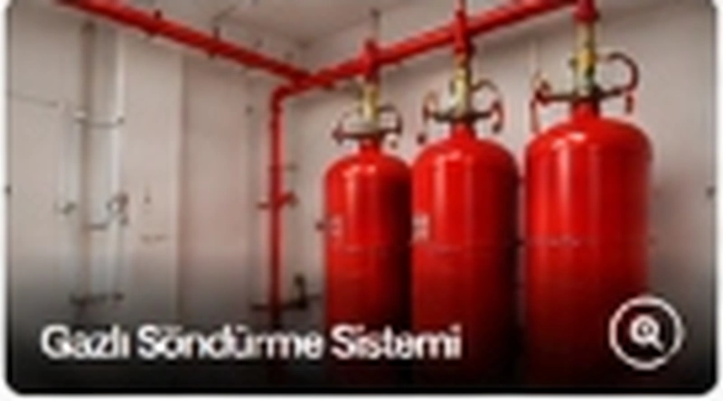

Yangın Söndürme Ekipmanları ve Parça Tedarik Hizmeti
Teknik şartnameye uygun sistem ekipmanı ve komponent tedariki (UL listeli / FM onaylı ürün seçenekleri ile); dikişsiz çelik silindirler, deşarj vanaları, nozullar ve orijinal yedek parçalar.

Teknik Şartnameye Uygun Ekipman ve Komponent Temini
Gazlı yangın söndürme sistemlerinde kullanılan her bir bileşenin akredite kuruluşlarca test edilmiş ve uluslararası sertifikalara sahip olması gerekir. Standart dışı bir vana veya nozul, deşarjın başarısız olmasına yol açabilir.
Fenix Yangın; teknik şartnameye uygun sistem ekipmanı ve komponent tedariki (UL listeli / FM onaylı ürün seçenekleri ile) sunarak projelerinize doğrudan ithalat gücü ve geniş depo stoğu ile destek verir.
Geniş Ekipman ve Yedek Parça Gamı
-
Sertifikalı Söndürme Silindirleri 15L - 180L arası TPED ve CE onaylı, yüksek basınca dayanıklı dikişsiz çelik silindirler.
-
Hızlı Açma Deşarj Vanaları Solenoid, pnömatik ve manuel aktivasyonlu, basınç göstergeli yüksek debili vana gövdeleri.
-
Özel Orifisli Deşarj Nozulları Pirinç ve paslanmaz çelik, 360° ve 180° deşarj desenli, korozyona dayanıklı nozullar.
-
Orijinal Söndürücü Gaz Temini Sertifikalı HFC-227ea (FM200) ve FK-5-1-12 (Novec 1230) saf söndürme ajanları.
-
Algılama ve Kontrol Komponentleri Çapraz zon söndürme kontrol panelleri, optik duman/ısı dedektörleri ve söndürme butonları.
Nasıl Çalışıyoruz?
5 adımda hızlı stok kontrolü, doğru ürün eşleştirmesi ve güvenli teslimat.
İhtiyaç İncelemesi
Proje şartnamesi ve hidrolik hesap raporundaki malzeme listesi teknik olarak denetlenir.
Optimum Ürün Seçimi
Şartnameye en uygun onaylı ürün kodları ve alternatifler belirlenerek fiyatlandırılır.
Kalite Doğrulama
Depodan sevk öncesi fabrika test sertifikaları ve parti numaraları kontrol edilir.
Güvenli Paketleme
Basınçlı kap ve hassas komponent taşıma standartlarına uygun koruyucu ambalajlama yapılır.
Şantiyeye Sevk
İlgili kalite belgeleri ve teknik kılavuzlar ile eksiksiz olarak sahaya teslim edilir.
İlgili Yangın Söndürme Sistemleri
FM200 Gazlı Söndürme
Sunucu odaları ve veri merkezleri için hassas elektronik dostu hızlı söndürme çözümü.
Sistemi İnceleyin → ÇEVRE DOSTU AJANNovec 1230 Gazlı Söndürme
Sıfır ODP, 1 GWP değeriyle sürdürülebilir kurumsal yangın koruma teknolojisi.
Sistemi İnceleyin → ENDÜSTRİYEL KORUMACO₂ Karbondioksit Söndürme
Trafo, jeneratör ve elektrik odaları için derinlemesine oksijen boğma sistemi.
Sistemi İnceleyin → LOKAL ÇÖZÜMPano İçi Mikro Söndürme
Elektrik panolarında yangını başladığı noktada boru üzerinden doğrudan söndürme.
Sistemi İnceleyin →